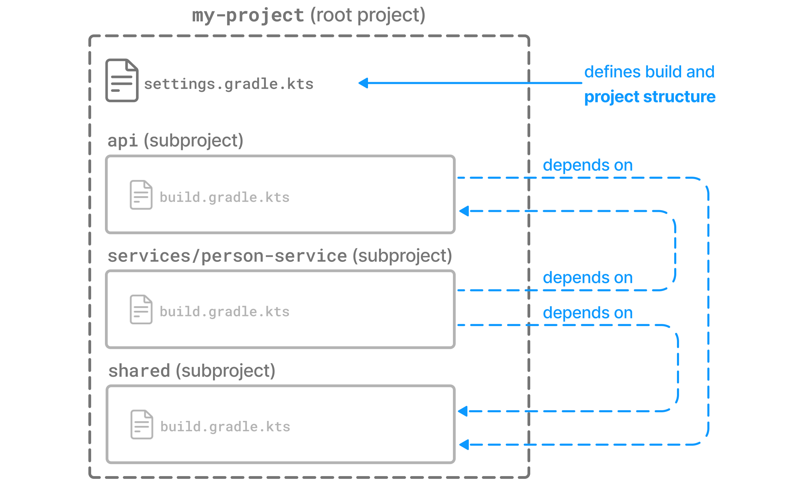

Gradle Multi Project에 대한 설명
업데이트:
Gradle1
- Gradle은 Groovy를 사용한 빌드 자동화 시스템으로, 주로 Java, C/C++, 파이썬 등의 언어를 지원한다.
Gradle Multi Project
- Gradle Multi Project Builds는 Monorepo 형태로 Root Project에서 Project 구조를 정의하고, Sub Project들을 파생하는 구조이다.
my-project/ ├── settings.gradle ├── build.gradle ├── app/ │ └── build.gradle ├── core/ │ └── build.gradle └── util/ └── build.gradle - 이 구조에서 특정 Sub Project에서 공통으로 사용하는 소스를 Sub Project로 관리하고 의존성을 주입하는 관계로 적용이 가능하다.

. ├── api │ ├── src │ │ └──... │ └── build.gradle ├── services │ └── person-service │ ├── src │ │ └──... │ └── build.gradle ├── shared │ ├── src │ │ └──... │ └── build.gradle └── settings.gradle - 위와 같은 구성을 통해 공통된 소스들을 각 Project에 Copy/Paste 혹은 다중 관리에 대한 유지보수성을 저하시키는 요소를 제거할 수 있다.
- 물론 Maven에서도 동일한 구성의 Multi Modules가 존재하지만, 오늘은 Gradle의 Multi Project 구성에 대해서 이전 포스트인 Spring gRPC 코드를 사용하여 설명을 진행한다.
Example Project
spring-grpc/
├── grpc-server
│ ├── src
│ │ └──...
│ └── build.gradle
├── grpc-client
│ └── src
│ │ └──...
│ └── build.gradle
├── grpc-libs
│ ├── proto
│ │ └──...
│ └── build.gradle
├── build.gradle
└── settings.gradle
spring-grpc
plugins {
id 'java'
id 'org.springframework.boot' version '3.4.5'
id 'io.spring.dependency-management' version '1.1.7'
id 'com.google.protobuf' version '0.9.2'
}
ext {
set('springGrpcVersion', "0.10.0")
set('springBootVersion', "3.4.5")
}
allprojects {
group = 'com.gracefulsoul'
version = '0.0.1-SNAPSHOT'
repositories {
mavenCentral()
google()
maven { url 'https://repo.spring.io/milestone' }
}
}
subprojects {
apply plugin: "java"
apply plugin: 'io.spring.dependency-management'
java {
toolchain {
languageVersion = JavaLanguageVersion.of(21)
}
}
dependencyManagement {
imports {
mavenBom "org.springframework.grpc:spring-grpc-dependencies:${springGrpcVersion}"
mavenBom "org.springframework.boot:spring-boot-dependencies:${springBootVersion}"
}
}
}
- 여기서 주목해야 하는 항목은 allprojects, subprojects이다.
- allprojects는 모든 프로젝트에 공통으로 적용하기 위한 설정이다.
- subprojects는 최상위 프로젝트를 제외한 하위 프로젝트에 공통으로 적용하기 위한 설정이다.
- 위 설정들은 각 프로젝트 내 build.gradle에 중복으로 설정되지 않도록 일괄 적용하기 위해 사용한다.
grpc-libs
plugins {
id 'java-library'
id 'com.google.protobuf' version '0.9.2'
}
jar {
enabled = true
}
repositories {
mavenCentral()
google()
}
dependencies {
implementation 'io.grpc:grpc-services:1.60.0'
}
protobuf {
protoc {
artifact = 'com.google.protobuf:protoc:3.25.3'
}
plugins {
grpc {
artifact = 'io.grpc:protoc-gen-grpc-java:1.64.0'
}
}
generateProtoTasks {
all()*.plugins {
grpc {
option 'jakarta_omit'
option '@generated=omit'
}
}
}
}
- 위 프로젝트는 라이브러리 형태로 각 프로젝트에 의존성 주입을 위한 프로젝트로, ‘java-library’ 플러그인을 사용한다.
- 이전 글에서 설명한 내용대로 protobuf를 사용하여 java 코드를 자동 생성할 것이므로, protobuf 관련 설정만 추가한다.
grpc-server
plugins {
id 'java'
id 'org.springframework.boot'
id 'io.spring.dependency-management'
}
dependencies {
implementation project(":grpc-libs")
implementation 'io.grpc:grpc-services'
implementation 'org.springframework.boot:spring-boot-starter'
implementation 'org.springframework.grpc:spring-grpc-spring-boot-starter'
testImplementation 'org.springframework.boot:spring-boot-starter-test'
testImplementation 'org.springframework.grpc:spring-grpc-test'
testRuntimeOnly 'org.junit.platform:junit-platform-launcher'
}
tasks.named('test') {
useJUnitPlatform()
}
- grpc-server에서는
implementation project(":grpc-libs")를 통해서 앞의 grpc-libs 프로젝트를 의존성 주입하여 사용하는 것을 명시한다.
grpc-client
plugins {
id 'java'
id 'org.springframework.boot'
id 'io.spring.dependency-management'
}
dependencies {
implementation project(":grpc-libs")
implementation 'org.springframework.boot:spring-boot-starter'
implementation 'org.springframework.grpc:spring-grpc-client-spring-boot-starter'
testImplementation 'org.springframework.boot:spring-boot-starter-test'
testImplementation 'org.springframework.grpc:spring-grpc-test'
testRuntimeOnly 'org.junit.platform:junit-platform-launcher'
}
tasks.named('test') {
useJUnitPlatform()
}
- grpc-client 또한
implementation project(":grpc-libs")를 통해서 앞의 grpc-libs 프로젝트를 의존성 주입하여 사용하는 것을 명시한다.
Conclusion

- 위와 같이 공통으로 사용하는 DTO와 Utility 등의 사이드 이펙트가 없는 순수 함수, 등의 다양한 목적의 공통 코드를 모듈화하여 공유한다.
- 쉽고 간편한 개발을 통해 만들어진 프로젝트는 깊은 고민과 설계를 통해 만들어진 프로젝트를 결코 따라잡지 못하므로, 코드를 먼저 작성하기보다는 더 나은 방안을 설계하고 고민하는 습관을 가졌으면 한다.
Reference
※ Sample Code는 여기에서 확인 가능합니다.